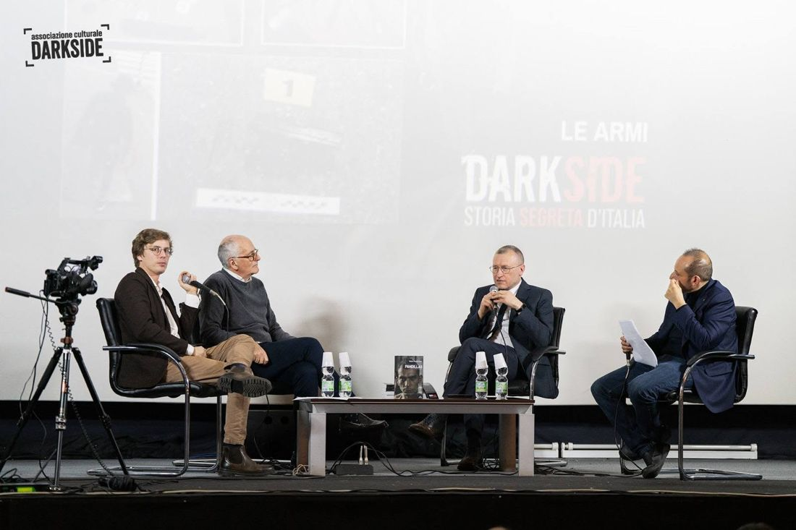
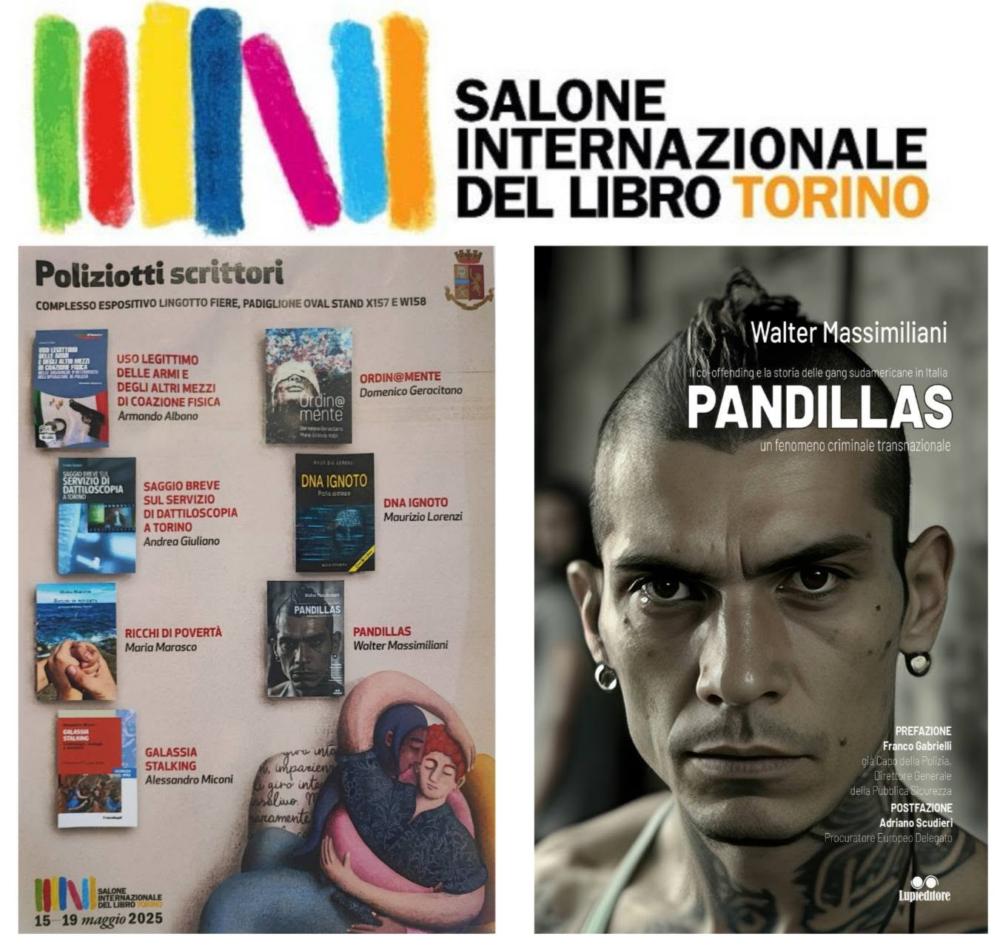
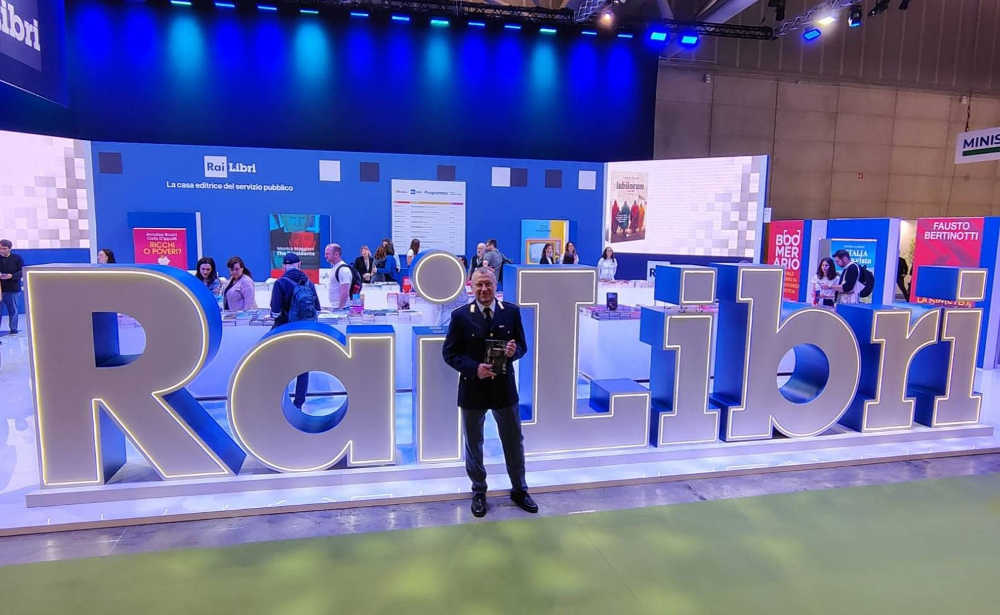
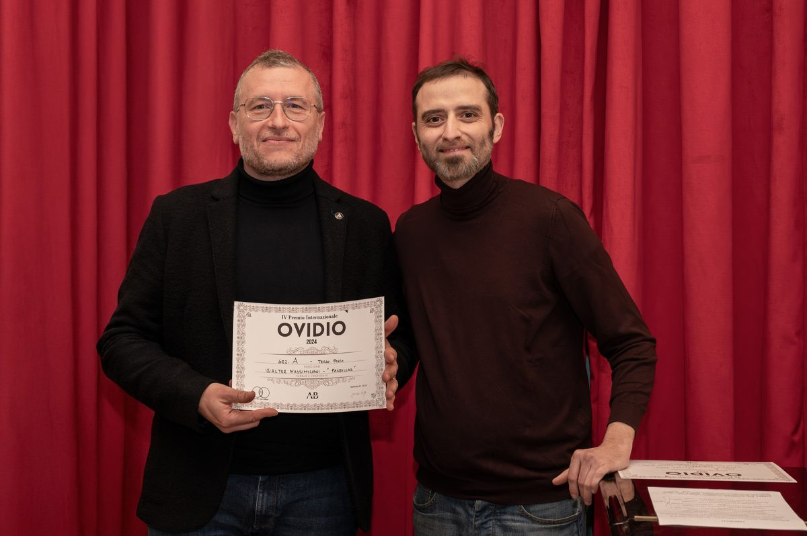
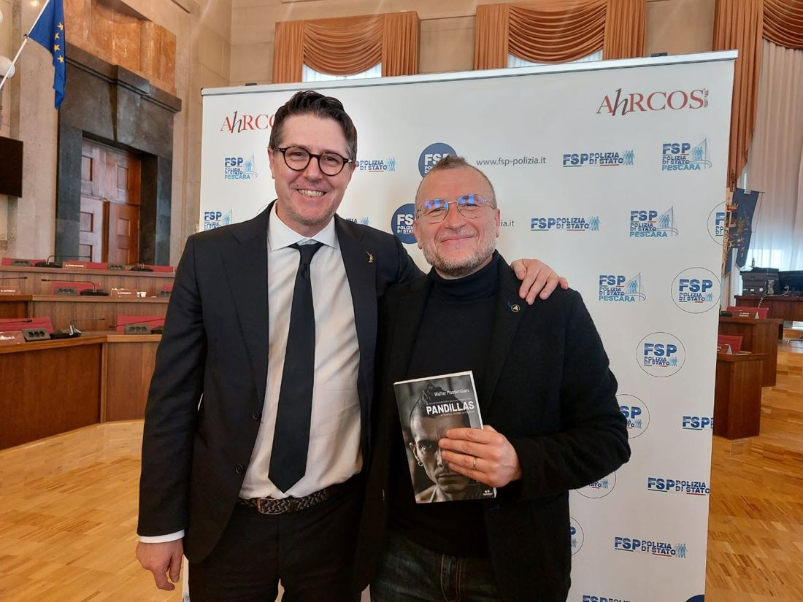
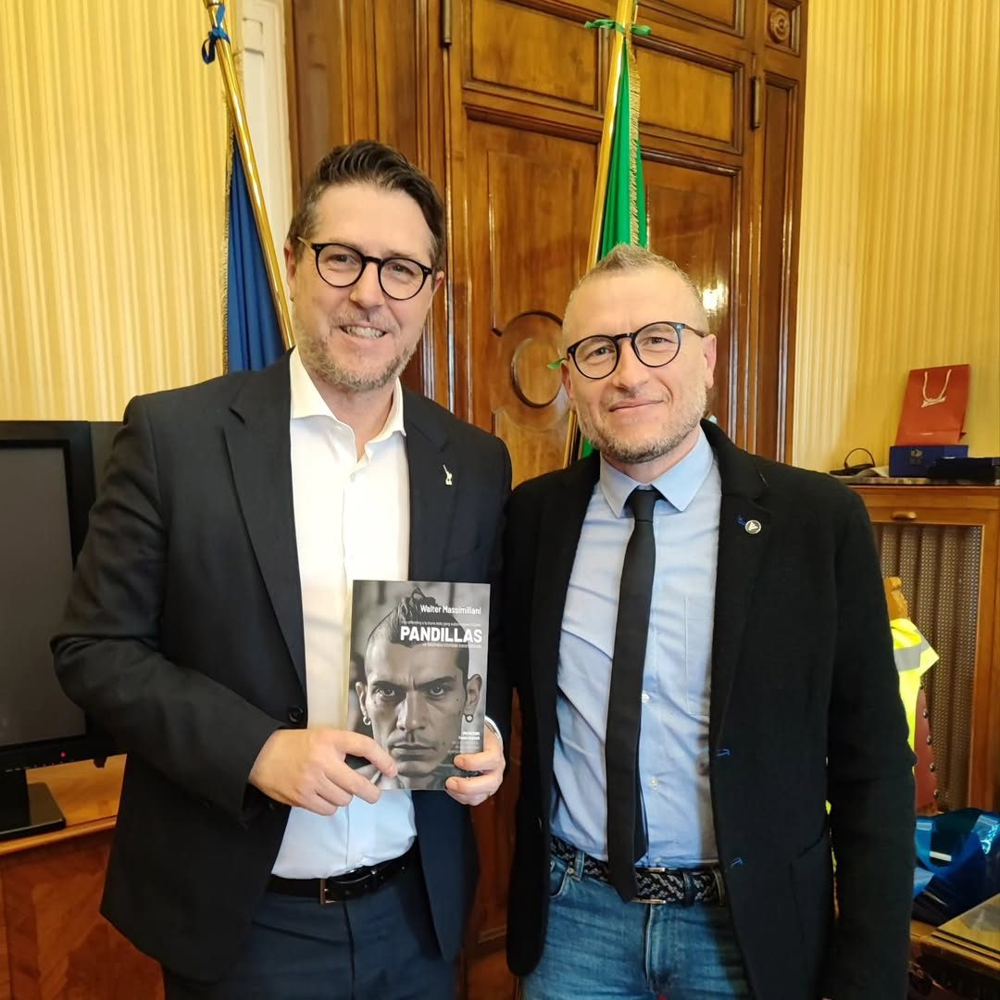
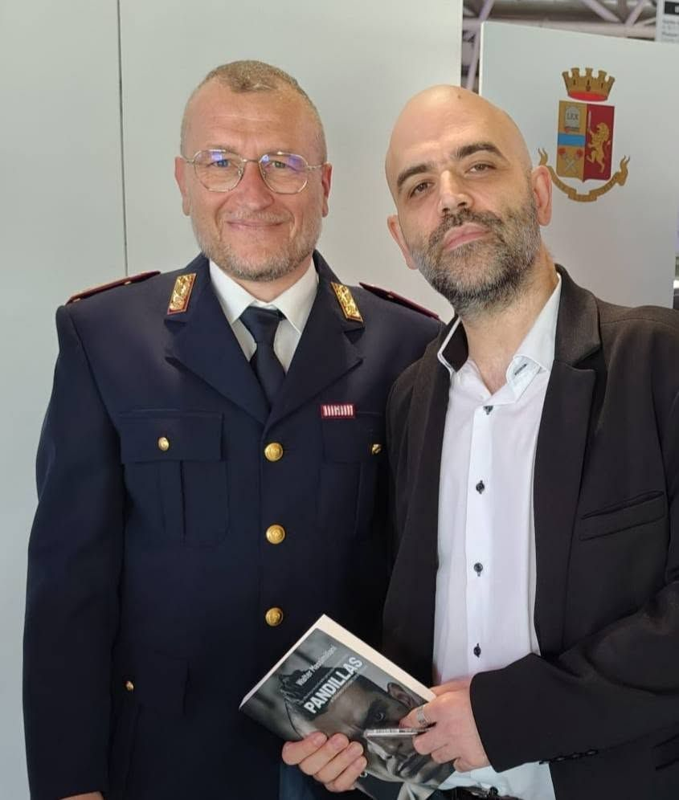

Gallery
Presentazioni e riconoscimenti









Porto le storie del libro nelle scuole, nelle università e nei convegni pubblici sul fenomeno delle pandillas e della devianza giovanile.
Dal 2018, incontri regolari nelle scuole primarie e secondarie di primo e secondo grado su legalità, uso consapevole del web, bullismo e cyberbullismo.
Laboratori professionalizzanti presso la Facoltà di Sociologia e Criminologia dell'Università G. d'Annunzio di Chieti-Pescara e presso l'Università Telematica UNIDAV, su devianza giovanile e co-offending.
Presentazioni del libro come al Salone del Libro di Torino (stand Polizia di Stato, 2025) e nell'ambito della Rassegna Dark Side.
Su incarico del Questore di Milano, aggiornamento del personale della Polizia di Stato su minoranze etniche, street gang e profili criminali.
Docente della materia immigrazione nei corsi di formazione per allievi agenti.
Sala Consiliare, Pescara. Convegno con Nicola Molteni (Sottosegretario di Stato, Ministero dell'Interno), Antonello Canzano (Università G. d'Annunzio), Carlo Solimene (Questore di Pescara), Valter Mazzetti (Segretario Generale FSP Polizia di Stato). Introduce Walter Massimiliani, modera il giornalista Enrico Giancarli.
Cinema Albertone. Presentazione di Pandillas con Franco Gabrielli, promossa dal Comune di Vasanello con Dark Side — Storia Segreta d'Italia.
Complesso Lingotto Fiere, stand Polizia di Stato / Questura di Torino, sezione "Poliziotti scrittori".
La rivista ufficiale della Polizia di Stato dedica una scheda a Pandillas nella rubrica "Il piacere di leggere — Poliziotti scrittori".
Aula Magna del Liceo Artistico Mazara e Biblioteca del Liceo G.B. Vico. Dialogo con gli studenti su Pandillas e devianza giovanile.







Sono disponibile per incontri nelle scuole, seminari universitari, convegni su criminalità organizzata transnazionale e devianza giovanile.
Richiedi un incontro